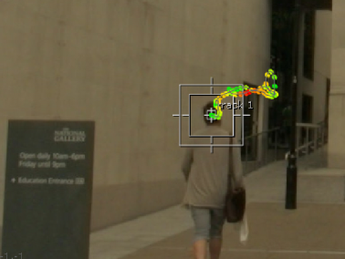
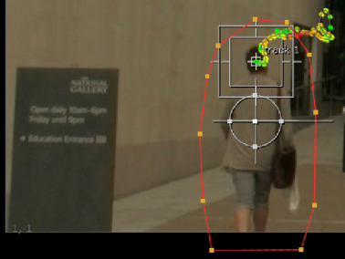
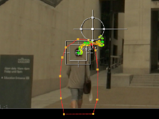

Creating animated masks using Roto and keyframes can be a very time-consuming process, but Nuke's Tracker node can do some of the initial work for you, especially with garbage mattes.
Once you have some solid tracking data, you can drive a roto shape without keyframing individual points:
| 1. | Track a feature in the area you intend mask. In the example, the figure's head serves as the driving point for the matte. |

| 2. | Add a Roto node to the script (keyboard shortcut O) and draw the shape you intend to drive with the tracking data. In this case, we don't need to be too accurate as we're creating a garbage matte. |

| 3. | In the Roto properties panel, click the Transform tab and select the matte in the shapes list. |
| 4. | Right-click the translate control's animation icon |
The Tracker's track_z and track_y keyframes are copied into the Roto's translate control, applying the same translate and offset to the matte shape.
| 5. | To compensate for this, select the Root item in the shape list and reposition the Roto shape correctly using the transform handle in the Viewer. |
|
|
 |
| The matte with offset. | The same matte after repositioning. |
| 6. | Scrub the playhead to see the matte following the tracked path. |
|
|